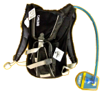
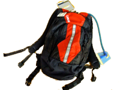

ResultsCongratulations to the winning team, the Bayviews (Renaud, Nate, Holland, Kris, Renata, Scott and Drew). Adam posted a bunch of pictures in Sea Lion's facebook group, you can read some comments from our group mailing list and download all the game score sheets (without late roster changes).Original pageThe San Francisco Sea Lions Underwater Hockey Club is proud to announce the 3rd Annual San Francisco Regional Tournament, to be held on March 27 at the City College pool in San Francisco.
CamelBak: Official Water Bottle of SF UWH
and tournament sponsor This will be a potluck event and players of all experience and skill levels are encouraged to attend. This event is especially meant to give players with NO tournament experience the opportunity to play a whole day of high level games with outstanding teammates. You're having fun at practice, now is your chance to taste competitive hockey Even potluck teams will be created by a random system that accounts for player skill levels. Skill levels will be assigned before the draw based on your self-rating and input from fellow players. Please rate your skill level on the registration site. Teams will be announced when you arrive at the pool on Saturday morning.
T-shirt designs are ready!
See a larger version here.
Get your shirt order (include size) by email to gpesce.at.gmail.com

 Buy great gear from CanAm at the pool! WhenGames will be played Saturday March 27, 2010. You can register online until Friday night.Detailed schedule:
WhereGames played at City College Swimming Pool, Ocean Ave and Howth St, San Francisco, CA 94112
We had a few practices at City College last year and like it. The pool has two flat courts 7 feet deep. The bottom is very slightly smoother than King. We will be using the same walls as the past two years, 6 inch high PVC sheets.
Banquet is at 23 Club, 23
Visitacion, Brisbane, 94005.Driving: The pool is conveniently located adjacent to I-280, a 50 minute drive to San Jose on Saturday morning. On the campus map the pool is on the middle of the right side. Parking on campus is $3. Transit: From Powell St BART ride 12 minutes to Balboa Park and walk 2 minutes to the pool. Biking: There is a big bike rack at the front door of the pool. Bike directions available at maps.google.com.   Win a CamelBak Velocity or Blowfish Hydration Pack in our free raffle for all players! RegisterMake sure you and your friends are on the registered list and have paid and signed everything.Registration is $40 until March 13, then $55. Register and pay online with your credit/debit card now! You can pay over the phone at 1-800-838-3006. Our event id is 98608. Sales end 11PM Friday March 26. There is a $1.99 service charge per ticket. Buy the combined "Play and Banquet" ticket to save money. If you have trouble buying your ticket online or want to register multiple people please contact us for information about paying directly. All players need to be 2010 USOA members. If you haven't paid your dues and signed a waiver for 2010 contact your club representative or visit usauwh.com. It costs $10 more if you wait until the day of the tournament. Rules and RefsAll players must have a mouth/ear guard and a pair of light and dark colored caps. There will be some for sale. Sticks must be colored solid black and white.We will have some full time refs but as usual players will spend some time helping with the reffing. For new refs we'll have a quick introduction at the start of the day. You can learn a lot reffing in the water but If you are very uncomfortable there you can help with the buzzer and scoring on deck. BanquetThere will be a banquet Saturday night immediately following the tournament at 23 Club, 23 Visitacion, Brisbane, 94005. We expect to arrive around 7pm. We'll have hot all you can eat empanadas, a salad and surprises. We enjoyed the beer in Oregon last year and Lars and Kimber (and others?) have kindly brewed a few kegs just for this tournament! The food will cost $15 and we're asking beer drinkers for $6 to cover costs. See the "Register" section above for tickets or you can pay cash at the door. At 9pm the band will start playing with the theme of island music.ContactIf you have questions, want a ride from local airports or a place to sleep please email [email protected] or call Tom at 415 684 8662.We look forward to seeing you in San Francisco!
Peace and love, The San Francisco Sea Lions Underwater Hockey Club |
Archived Tournaments >